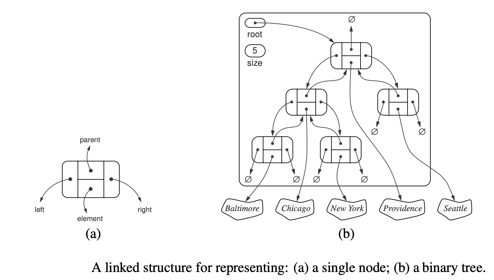

Lecture 6: Binary Trees - I
Contents
Lecture 6: Binary Trees - I¶
Review¶
Binary Tree¶
pointer-based data structure (like linked list) can achieve worst-case performance
binary tree is pointer-based data structure with three pointers per node
node <X>: item, parent pointer, left pointer, right pointer
position |
<A> |
<B> |
<C> |
<D> |
<E> |
<F> |
|---|---|---|---|---|---|---|
item |
\(A\) |
\(B\) |
\(C\) |
\(D\) |
\(E\) |
\(F\) |
parent |
None |
<A> |
<A> |
<B> |
<B> |
<D> |
left |
<B> |
<D> |
\(None\) |
<F> |
None |
None |
right |
<C> |
<E> |
None |
None |
None |
None |
Terminology¶
the root has no parent
a leaf of a tree has no children
depth (<X>) of a node (<X>) in the tree rooted at \(<R>\) to be the length of path from (<X>) to \(<R>\). Depth starts from the root.
height (\(h\)) <X> of a node to be the max depth of any node in the subtree rooted at <X>. Height starts from the leaf.
the height of leaf is 0 and the depth of a root is 0.
How to represent tree in set and sequence?
traverse order:
F-D-B-E-A-Cevery node in the node <X>’s left subtree is before <X>
every node in the node <X>’s right subtree is after <X>
algorithm
iterate <X> as subtree:
iterate <X>.left
output <X>
iterate <X>.right
traversal order has no meaning relative to the stored item.
later assign semantic meaning to traversal order to implement Set/Sequence interface
Static Operation¶
cannot cheaply maintain traversal order of tree. The following operations assumes the computer cannot get the traversal order cheapily.
subtree_first(<X>): find first node in the traversal order of node <X>’ subtreealgorithm -> \(O(h)\)
recursively return the first node in the left subtree
example
subtree_first(<A>) -> <F>
subtree_last(<X>): symmetric to subtree_first()successor(<X>): next after node <X> in the tree’s traversal orderalgorithm -> \(O(h)\)
if <X>.right, return
subtree_first(<X>)else: -> return lowest ancestor of <X> for which <X> is in the left subtree
walk up the tree (<X> = <X>.parent)
until go up a left branch (<X> = <X>.parent.left)
return <X>
example
successor(<B>) -> <E>successor(<E>) -> <A>successor(<A>) -> None
predecessor(<X>): first before node <X> in the tree’s traversal ordersymmetric to
successor.
Dynamic Operation¶
the operations are on traversal order
subtree_insert_after(node.new) -> \(O(h)\)algorithm
if <X> has no right child, make <Y> the right child of <X>
otherwise, make the <Y> as the left child of <X>’s successor (which cannot have a left child)
examples
insert <G> after <D> in traveral order
insert <H> after <A> in traversal order
_____<A>_____
__<B>__ __<C>__
__<D>__ <E>
<F> <G>
_____<A>_____
__<B>__ __<C>__
__<D>__ <E> <H>
<F>
subtree_insert_before(nod.new)algorithm
if <X> has no left child, make make <Y> the left child of <X>
otherwise, make the <Y> as the right child of <X>’s predecessor (which cannot have a right child)
examples
insert <G> before <E> in traversal order
insert <H> before <B> in traversal order
_____<A>_____
__<B>__ __<C>__
__<D>__ __<E>__
<F> <G>
_____<A>_____
__<B>__ __<C>__
__<D>__ <E>
<F> <H>
subtree_delete(<X>) -> \(O(h)\)algorithm
if <X> is a leaf, detach from parent and return
otherwise, <X> has a child
if <X> has a left child, swap items with the predecessor of <X> and recurse
otherwise <X> has a right child, swap items with the successor of <X> and recurse
examples:
delete(F)
delete(A)
Application: Set -> Binary Search Tree¶
traversal oder is sorted order increasing by keys
equivelant to Binary Search Tree (BST): for every node, every key in the left subtree \(\le\) node’s key \(\le\) every key in the right subtree
BST is a particular type of binary tree that provide an efficient way of storing data that allows particular items to be found as quickly as possible.
Then we consider further elaborations of these trees in Lecture 7, namely AVL trees, which operate more efficiently at the expense of requiring more sophisticated algorithms.
BST
Searching with arrays or lists. we have seen the advantage of a sorted array when we want to find an item (e.g., \(O(logn)\) time). However, that involves an overhead of sorting the array in the first place, or maintaining a sorted array if items are inserted or deleted over time.
The idea here is that, with the help of binary trees, we can
speed up the storing and search process without needing to maintain a sorted array.Search keys: If the items to be searched are labelled by comparable keys, one can order them and store them in such a way that they are sorted already. Being ‘sorted’ may mean different things for different keys, and which key to choose is an important design decision.Such as integer numbers (e.g., student ID numbers)
dictionaryis a classic example, which is a sequence of entries and each entry is a pair of a key and its value.
subtree_insert(A,B): insert node B to binary search tree A (from root)if B.item.key < A.item.key:
if A.left:
subtree_insert(A.left, B)else: A.left.
subtree_insert_before)(B)
elif B.item.key > a.item.key:
if A.right:
subtree_insert(A.right, B)else: A.right.
subtree_insert_after(B)
else:
A.item = B.item
build(S)-> build a binary search tree from a given setrecursively use
subtree_insertwith each element in S
delete(k)-> delete node with keykfirstly,
X = subtree_find(k)then,
subtree_delete(X)
subtree_find(k)-> binary searchif \(k\) is smaller than key at <X>, recurse in the left subtree (or return None)
if \(k\) is greater than key at <X>, recurse in the right subtree (or return None)
otherwise return the item stored at <X>
The operations are in \(O(h)\).
Perfectly balanced tree has the minimal height, and thus can lead to \(O(logn)\) time.
The idea is to main the BST height-balanced after dynamic operations. - See Lecture 7- AVL Trees.
Application: Sequence -> Any Application???¶
traversal oder = sequence order. See
buildhow to find
ith node in the traversal order of a subtree?subtree_at(node, i)size(node) = # of nodes in the subtree(node)assume we could calculate the size of subtree in \(O(1)\), then the algoithm is \(O(h)\)
size of the left subtree \(n_L\)
if \(i<n_L\), recurse on the left subtree,
subtree_at(node.left, i)if \(i>n_L\) recurse on the right subtree with \(i = i - n_L -1\),
subtree_at(node.right, \(i-n_L-1\))otherwise \(i = n_L\)
How to maitain the size of subtree? subtree augumentation.
subtree_augumentationeach node can store O(1) extra fields/properties
subtree property can be computed from the properties of node’s children or access the node itself.
sizecan be such a property:node.sizewhen adding new leaf, add +1 to a.size for all ancestors a in \(O(h)\)
when deleting leaf, add -1 to a.size for all ancestors a in \(O(h)\)
subtree properties
sum, product, min, max, …
But NOT
node index -> hard to maintain because it depends on all other nodes. Tree usually not maintain globe property
depth
his also hard to maintain
Sequence Interfaces
build(S)-> build a binary tree from a given sequence.there are so many methods. The easiest and naive one is to insert node by sequence using
subtree_insert_after(), which will lead to a tree with a height of \(n\)want a \(O(n)\) time algorithm that leads to \(logn\) height
build tree by storing the middle item in the root node, and then recursively build the remaining left and right subtree.
subtree_at(i)-> find theith node in the traversal order of a subtreesee the above explanation
delete(i)-> delete theith node in the traversal order of a subtreeX = subtree_at(i)subtree_delete(X)
insert(i, x)-> insert theith node with given value ofxin the traversal order of a subtreeX = subtree_at(i): find the orginalith nodesubtree_insert_before(X, x)udpate the
sizefor all the nodes afteriby 1
Python Implementation¶
Abstract Data Type: Tree¶
class Tree:
"""Abstract base class representing a tree structure"""
#---------------- nested Position class
class Position:
"""An abstraction representing the location of a single element"""
def element(self):
"""Return the element stored at this Position"""
raise NotImplementedError('must be implemented by subclass')
def __eq__(self, other):
"""Return True if other Position represents the same location"""
raise NotImplementedError('must be implemented by subclass')
def __ne__(self, other):
"""Return True if other does not present the same location"""
return not (self == other)
# ------------ abstract methods that concrete subclass must support -------
def root(self):
"""Return Position representing the tree's root"""
raise NotImplementedError('must be implemented by subclass')
def parent(self, position):
"""Return Position representing position's parent """
raise NotImplementedError('must be implemented by subclass')
def num_children(self, position):
"""Return the number of childern that a position has"""
raise NotImplementedError('must be implemented by subclass')
def children(self, position):
"""Generate an iteration of Positions representing position's childern"""
raise NotImplementedError('must be implemented by subclass')
def __len__(self):
"""Return total number of elements in the tree"""
raise NotImplementedError('must be implemented by subclass')
def is_root(self, position):
"""Return True if position is the tree's root"""
return position == self.root()
def is_leaf(self, position):
"""Return True if position is a leaf"""
return self.num_children(position) == 0
def is_empty(self):
"""Return True if tree is empty"""
return len(self) == 0
def depth(self, position):
"""Return the depth of a position from its root"""
if self.is_root(position):
return 0
else:
return 1 + self.depth(self.parent(position))
def height(self, position):
"""Return the height of a position from the lowest leaf"""
if position is None:
position == self.root()
return self.__height1(position)
def __height1(self, position):
"""Return the height of the subtree rooted at position in a linear time in size of the subtree"""
if self.is_leaf(position):
return 0
else:
return 1 + max(self.__height1(c) for c in self.children(position))
# we might also use tree augumentation to faciliate the calculation of height
Binary Tree¶
ordered tree with each node having at most two children
each child node is labeled as being either left or right child
a left child precedes a right child in the order of children of a node
class BinaryTree(Tree):
"""Abstract base class representing a binary tree structure"""
# ------- additional abstract method --------------------
def left(self, position):
"""Return a Position representing position's left child"""
raise NotImplementedError('must be implemented by subclass')
def right(self, position):
"""Return a Position representing position's right child"""
raise NotImplementedError('must be implemented by subclass')
# ------ concrete method for binary trees ---------
def sibling(self, position):
"""Return a position representing position's sibling"""
parent = self.parent(position)
if parent is None:
return None
else:
if position == self.left(parent):
return self.right(parent)
else:
return self.left(parent)
def children(self, position):
"""Generate an iteration of Positions representing position's children.
Although we have still not speci- fied how the children of a position will be stored,
we derive a generator for the ordered children based upon the implied behavior of abstract methods left and right.
"""
if self.left(position) is not None:
yield self.left(position)
if self.right(position) is not None:
yield self.right(position)
Linked Structure for Binary Tree¶
The Tree and BinaryTree classes that we have defined thus far in this chapter are both formally abstract base classes.
Although they provide a great deal of support, neither of them can be directly instantiated.
We have not yet defined key implementation details for how a tree will be represented internally, and how we can effectively navigate between parents and children.
Specifically, a concrete implementation of a tree must provide methods root, parent, num children, children, len, and in the case of BinaryTree, the additional accessors left and right.
There are several choices for the internal representation of trees: linked structure and array-based structure.
We begin with the case of a binary tree, since its shape is more narrowly defined.

class LinkedBinaryTree(BinaryTree):
"""Linked representation of a binary tree structure"""
class _Node: # Lighweight, nonpublic class for storing a node
__slots__ = '_element', '_parent', '_left', '_right'
def __init__(self, element, parent = None, left = None, right = None):
self._element = element
self._parent = parent
self._left = left
self._right = right
class Position(BinaryTree.Position):
"""An abstraction representing the location of a single element"""
def __init__(self, container, node):
self._container = container
self._node = node
def element(self):
"""Return the elmenet stored at position"""
return self._node._element
def __eq__(self, other):
return type(other) is type(self) and other._node is self._node
def _validate(self, position):
"""Return associated node if position is valid"""
if not isinstance(position, self.Position):
raise TypeError('position must be proper Position type')
if position._container is not self:
raise ValueError('position does not belong to this container')
if position._node._parent is position._node: # convention for deprecated nodes
raise ValueError("position is no longer valid" )
return position._node
def _make_position(self, node):
"""Return Position instance for a given node"""
return self.Position(self, node) if node is not None else None
# ----------------- binary constructor -----------------
def __init__(self):
"""Create empty binary tree"""
self._root = None
self._size = 0
# ---------------- public accessors -----------------
def __len__(self):
"""Return the total numner of elements in the tree"""
return self._size
def root(self):
"""Return Position representing the tree's root"""
return self._make_position(self._root)
def parent(self, position):
"""Return the Position of position's parent"""
node = self._validate(position)
return self._make_position(node._parent)
def left(self, position):
"""Return position's left child """
node = self._validate(position)
return self._make_position(node._left)
def right(self, position):
"""Return position's right child """
node = self._validate(position)
return self._make_position(node._right)
def num_children(self, position):
"""Return the number of children of position"""
node = self._validate(position)
count = 0
if node._left is not None:
count += 1
if node._right is not None:
count += 1
return count
def find_first(self, position):
"""Return position that appears the first in the given subtree's inorder traveral order
if node has left child, recursively return the first node in the left subtree
else node is the first node
"""
node = self._validate(position)
if node._left:
position = self.left(position)
self.find_subtree_first(position)
else:
return position
def find_last(self, position):
"""Return position that appears the last in the given subtree's inorder traveral order
if node has right child, recursively return the last node in the right subtree
else node is the first node
"""
node = self._validate(position)
if node._right:
position = self.right(position)
self.find_subtree_last(position)
else:
return position
def find_ancestor_left(self, position):
"""Return the first ancestor position that the node is in its left subtree"""
node = self._validate(position)
if node == node._parent._left:
return self.parent(position)
else:
position = self.parent(position)
self.find_ancestor_left(position)
def find_ancestor_right(self, position):
"""Return the first ancestor position that the node is in its right subtree"""
node = self._validate(position)
if node == node._parent._right:
return self.parent(position)
else:
position = self.parent(position)
self.find_ancestor_right(position)
def find_successor(self, position):
"""Return successor of node in the traversal order
if the node has right child, return the first of right subtree
else return the lowest ancestor of the node for which the node is in its left subtree
"""
node =self._validate(position)
if node._right:
return self.find_first(self.right(position))
else:
return self.find_ancestor_left(position)
def find_predecessor(self, position):
"""Return predecessor of node in the traversal order
if the node has left child, return the last of left subtree
else return the lowest ancestor of the node for which the node is in its right subtree
"""
node =self._validate(position)
if node._left:
return self.find_first(self.left(position))
else:
return self.find_ancestor_right(position)
def _add_root(self, element):
"""Place element e at the root of an empty tree and return new Position.
Raise ValueError if tree nonempty.
"""
if self._root is not None: raise ValueError('Root exists')
self._size = 1
self._root = self._Node(element)
return self._make_position(self._root)
def _add_left(self, position, element):
"""Create a new left child for Position p, storing element e.
Return the Position of new node.
Raise ValueError if Position p is invalid or p already has a left child.
"""
node = self._validate(position)
if node._left is not None: raise ValueError('Left child exists')
self._size += 1
node._left = self._Node(element, parent = node)
return self._make_position(node._left)
def _add_right(self, position, element):
"""Similar to left"""
pass
def _replace(self, position, element):
"""Replace the element at position p with e and return old element"""
node = self._validate(position)
old = node._element
node._element = element
return old
# ---------------- some dynamic operations
def _delete(self, position):
"""Delete the node at position while maintaining the traversal order
if node is a leaf, detach it from parent and return
if node has a child
if node has a left child, swap items with the predecessor of node and recurse
otherwise node has a right child, swap items with the successor of node and recurse
Return the element that had been stored at Position p.
Raise ValueError if Position p is invalid or p has two children
"""
node = self._validate(position)
parent = node._parent
if self.is_leaf(node):
# remove links between node and parent
if node == parent._left:
parent._left = None
if node == parent._right:
parent._right = None
elif node._left:
# swap items with the predecessor of node
predecessor = self.find_predecessor(position)
position._element, predecessor._element = predecessor._element, position._element
self._delete(predecessor)
else:
# swap items with the predecessor of node
ancessor = self.find_ancessor(position)
position._element, ancessor._element = ancessor._element, position._element
self._delete(ancessor)
node._parent = node # convention for deprecated node
self._size -= 1
return node._element